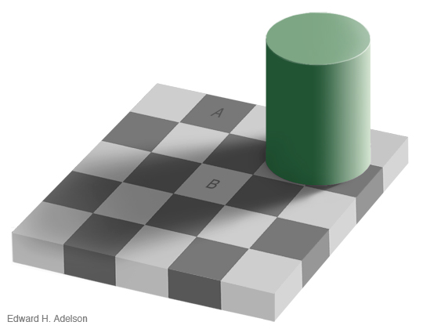

ForewordWhen teaching at my own centre or in other Theravāda Buddhist centres I usually find that those who attend such
classes and talks already have an interest in Theravāda teachings. However, when discussing Dhamma on Internet forums I come across the full spectrum of Buddhist thought from all schools of Buddhism. The teachings of the Buddha have spread to many different cultures over the centuries and have, in some cases, changed beyond all recognition. Unlike many Buddhists of Southeast Asia, Western
Buddhists have often come into contact with several of these divergent schools of thought, and many have also introduced their own ideas from western psychology or philosophy to further dilute or pollute the original teachings of the Buddha. In the Mahāparinibbāna Sutta, the Buddha advised us to compare any teachings with the Dhamma and Vinaya, and to reject them if they do not fit with,
but contradict the original teachings. We should be wary of accepting any teachings at face value. Those teachings that we have accepted should be re-examined constantly in the light of whatever knowledge we gain later. All of us start from a point of not knowing, not understanding, and imperfect views. That is the nature of the human condition. If we were not deluded, we would not have
taken rebirth in this world. The basic assumption for a Buddhist is that the Buddha knew something that we do not. To be a Buddhist, therefore, means that one must follow “The Way of Analysis,” or “The Way of Inquiry (Vibhajjavāda).” The Buddha’s teaching is not a religion, or a belief-system, but a way of life and a practical method to develop the mind so that we can remove our ignorance, clarify our understanding, and gain right view. The Pāli term for right view — sammā ditthi — has a broader meaning than simply “right” as opposed to “wrong.” A Sammāsambuddha is a “Fully Awakened Buddha” so “sammā ditthi” means a view that is perfectly correct, fully in accordance with reality. While we are in the process of studying and practising the Buddha’s teaching, our view is gradually straightened out and refined to remove any imperfections until, on attaining the Noble Path and realising nibbāna, it becomes the perfectly correct view that is fully in accordance with the way things are.
The most reliable source we have for the Buddha’s teachings are the Pāli texts. Translations are not the original teachings, but interpretations by those who have some knowledge of Pāli. Some translations are more trustworthy than others, but if we really want to know what the Buddha taught then we have to go beyond intellectual knowledge, and practice his teachings to gain direct knowledge.
Nevertheless, before we can practise properly we do need to know what the Buddha taught, so there is much to be done by way of study, discussion, and systematic reflection. The famous Mangala Sutta lists thirty-eight auspicious signs of a prosperous future for one who fulfils them. Included in these thirty-eight are: 1) Not to associate with fools (asevanā ca bālānam), 2) To associate with the wise (panḍitanañca sevanā), 7) Great learning (bāhuscaccañca), and 8) Skill in work (sippañca), 26) Hearing the Dhamma at the right time (kālena dhammasavanam), and 30) Opportune discussion of the Dhamma (kālena dhammasākacchā), all of which are about acquiring knowledge.
The empty-headed are just a bit too quick to quote the case of “Empty-headed” Pothila, who was very learned in the scriptures, but still unenlightened. This elder quickly realised the Dhamma when he practised properly. I wonder how many of those who criticise academic learning have practised meditation seriously and gained insight? Study, practice, then realisation is the natural order of things. In exceptional cases, when an intelligent, virtuous, and wise person meets an enlightened teacher, they may gain realisation with little or no study. References are to editions of the Pāli Texts in Roman Script published by the Pali Text Society. In the PTS
translations, these page numbers are given in the page headers or in square brackets in the body of the text. This practice is also followed by Bhikkhu Bodhi’s modern translations, like that below: 128 Sallekha Sutta: Sutta 8i.44
Thus, a reference to M.i.44 would be found on page 44 of volume one in the Pāli edition, but on page 128 of Bhikkhu Bodhi’s translation. It would be on a different page in Miss I.B. Horner’s translation, but since the Pāli page reference is given, it can still be found. In the Chattha Sangāyana edition of the Pāli texts on CD, the references to the pages of the PTS Roman Script edition are
shown at the bottom of the screen, and can be located by searching. I have attempted to standardise the translation of Pāli terms, but it is impossible to be totally consistent as the various translations and editions are from many different sources. In the index you can find the Pāli terms in brackets after the translations. The War on ErrorIntroductionThere are two opposing ways that one can look at the world: the religious view-point, and the political view-point. The political view-point is concerned with the
external world, the behaviour of human beings and how their behaviour affects others in society. Politicians try to persuade and coerce others to behave as they wish, for what they perceive as the benefit of society and therefore to themselves. The religious view-point is concerned with the personal world, the behaviour of oneself, and how one’s own behaviour affects others in society. Religious people try to behave in a way that they perceive is of benefit to themselves and therefore to
society. In the following pages I will give a Buddhist’s view-point — not, please note, the Buddhist view-point, but my own view-point on how to wage the war on error and fight the real enemies of Buddhism. I will support my views with references to the Pāli texts, and I hope that you will read the available translations for yourselves to improve your own understanding of what the
Buddha taught. If we regard ourselves as followers of the Buddha, then we should try to follow what he taught, not what others say that he taught, or what we think he should have taught. In other words, we should not just follow our own views and opinions, or even the views and opinions of learned monks, but we should make a thorough inquiry into the teachings of the Buddha, and then try to apply those teachings in our daily lives. If we don’t make a thorough inquiry, then we are not waging war on error, but waging war in error. It won’t be a holy war, but a wholly inappropriate war for Buddhists to engage in, and it will be a tragic waste of this very rare and precious human rebirth during an era when the Buddha’s teachings are still to be found in the world, and when there are still Noble Ones who know the right path leading to the end of all suffering.
Holy War in BuddhismLike other religions, Buddhism also has a concept of holy war. Ignorant people use such ideas to justify physical violence, intimidation, denial of basic human rights, and the oppression of others. However, there is only one holy war that deserves
the name, and that is the struggle to be waged by each individual to remove his or her own craving and ignorance. No other war, crusade, or campaign is worthy of the appellation “holy.” Such battles with the external world do not lead to mental peace or to the cessation of defilements (nibbāna), but only to more suffering and greater ignorance. If you impose your views on others and deny them the right to hold different views, then you are not practising the Buddha’s teaching. Right views can be promoted by teaching Dhamma, by pointing out what is not Dhamma, and by allowing others the freedom to decide for themselves which is which. If they choose the wrong path, that is for their loss and harm, but it is not your responsibility. Even the Buddhas can only show the way, those who claim to be his disciples must follow his instructions to reach the goal.
When the Dhamma is not properly practised, then the ignorant need to wage war in the name of protecting the religion, but actually all they are doing is protecting their own self-interest. This is not the way to preserve the Dhamma, but the way to destroy it. During wars, even if the nation is victorious, many lives are lost, much wealth is dissipated, many enemies are made, and the young men who
return from war do so with both physical and mental scars. The way of the ideal Buddhist ruler — the Cakkavatti, or Wheel-turning monarch — is to conquer by means of generosity, friendliness, and by speaking the truth, not by the force of arms and threats of violence. Such a campaign, of course, would not be a war, but a diplomatic mission. In the Milinda Pañha, King Milinda asked
Venerable Nāgasena, “Venerable sir, will you discuss with me again?” “If your majesty will discuss as a scholar, yes; but if you will discuss as a king, no.”
“How is it then that scholars discuss?” “When scholars discuss there is a summing up and an unravelling; one or
other is shown to be in error. He admits his mistake, yet he does not become angry.”
“Then how is it that kings discuss?” “When a king discusses a matter and advances a point of view, if anyone differs from him on that point he is apt to punish him.”
“Very well then, it is as a scholar that I will discuss. Let your reverence talk without fear.” To preserve the Dhamma, we should discuss like scholars, not like kings. If we are unable to win over others to our point of view, then the fault lies not with the Dhamma, but most probably with our exposition of it. Even the Buddha himself could not win over everyone to be his disciple, so what can his ordinary disciples do? Finally, after all kindness, generosity, and reasoning have failed, we must practise tolerance,
and abide in equanimity. The Dhamma will not disappear because non-Buddhists attack it and try to convert Buddhists to their faith, the Dhamma will disappear only when Buddhists fail to practise it properly. Self-DefenceWhat should Buddhists do when they
are abused or attacked? How should they deal with aggression? A lady once asked me how she should deal with anger, so I advised her to contemplate the anger and the thoughts that gave rise to the anger, using the Satipatthāna method. However, I later learnt that what she meant to ask was, “How do you deal with aggression?” That is a different question entirely. It seems that her husband was in the habit of venting his anger on her. In this case, just being mindful with bare awareness of
shouting or abusing is unlikely to be very effective. It might even make him more angry as he feels that he is being ignored and not getting the attention that he seeks. In this case, one should practise loving-kindness. Someone who regularly cultivates the practise of loving-kindness has very little fear or anger. They are no threat to anyone, so they rarely attract aggression. If one can develop deep insight into the human condition, then one can realise that there is nothing to defend. If
there is no egoism, no self-interest, no craving, no expectations, no anxiety, how could anger arise? However, most of us are not free from all defilements yet, so how should we deal with abuse? Should we be a doormat or a punch-bag for others to use as they wish? I don’t think that this is the Buddha’s teaching. In the Dhammapada it says: “Conquer anger by love. Conquer evil by good.
Conquer the stingy by giving. Conquer the liar by truth.” (Dhp v 223)
When others tell lies about us, steal from us, or abuse us, we should defend ourselves. However, if we become angry, then that is a weakness in us that we should learn from. We should be long-sighted, not short-sighted. All beings are the owners of their kamma, and will inherit its results. The suffering that we are inheriting while being mistreated or abused is a result, but not all things are due to previous kamma. We
can and should act in the present moment to deflect the fruition of past kamma as best we can. When we return anger with loving-kindness, stinginess with generosity, and speak the truth to expose lies, we are practising equanimity in the right way. If we do nothing, we are practising the equanimity of the water buffalo. At one time, the Venerable Ajahn Chah asked a monk why he had not fixed
the hole in the roof of his hut, from which water was coming inside. The monk replied that he was practising equanimity. Ajahn Chah said that that was the equanimity of the water buffalo. If we practise that kind of equanimity, we may be strong, but we are behaving like a water buffalo. A human being should use wisdom to deal with problems that have arisen, using force if necessary, but not
with anger. At one time, a shameless bhikkhu I lived with was constantly harassing me in various ways. After I returned from almsround one day, having walked six miles, he accosted me as soon as I returned, complaining that his telephone was not working. I immediately looked at his phone, and tested my own phone, to see if I could find an obvious fault. I could not, so I told him that I did not know why it was not working, and returned to my room to get ready for a shower, and to wash my
almsbowl. The monk followed me into my room with his phone, still complaining that it was not working. So I made as if to follow him back to his room, and as he left my room I guided him out, and shut and locked the door to prevent him harassing me any further. For this I was accused by the Secretary of the Trust that supported the vihāra of “Committing an act of violence.” That is how corrupt people behave. They do not make a proper inquiry into the circumstances, but follow their own
prejudices. If one can afford to, then one can also take legal action to defend one’s reputation — that option is not available to monks or most lay people due to the very high legal costs involved. One just has to put such injustices down to the fruition of past unwholesome kamma, let go, and move on. When the circumstances demand it, Buddhists can and should use reasonable force to
defend their own interests, but what is reasonable force is not written down in any book. You have to decide that for yourself as circumstances unfold. If we become angry — and there are plenty of things in this world that could make us angry if we are not mindful — then we will not be able to see clearly our own benefit, the benefit of others, nor the benefit of both. The Buddha gave
the Simile of the Saw to advise us how to respond to violence. “Monks, even if bandits were to cruelly sever your limbs with a two-handled saw, he who got angry even at that would not be following my teaching. Thus you should train yourselves: ‘My mind will not be corrupted and I will utter no evil speech. I will remain with compassion for their welfare, with a noble mind full of
boundless loving-kindness, and free from hatred. I will abide pervading these individuals with a mind imbued with loving-kindness, I will radiate boundless loving-kindness to the entire world.’ That is how you should train yourselves.” Of course, we understand that very few people are entirely free from anger — only Non-returners and Arahants have eradicated anger completely — but
the Buddha’s advice is clear, if we follow his teachings properly we should conquer anger and violence by practising loving-kindness and patience, without limit. There is no justification in the Buddha’s teachings for waging war with weapons and bombs to kill other living beings. If, due to lack of mindfulness, patience, and compassion, we do resort to violence or warfare, that is a fault in us, and we will make unwholesome kamma if we harm others for our own short-term benefit.
However, do not misunderstand this teaching. We do not need to run away from aggression, but we should face up to it with courage and quiet determination. We can find examples in the texts of how the Buddha dealt with aggression, abuse, and threats to his life. On one occasion, King Vitatūbha,
the son of King Pasenadi of Kosala, wished to attack and destroy the Sākyan race, and set off with his army. Knowing of the king’s intentions, the Buddha went to the road that he knew the army would follow and sat in the open near to a shady tree. When the king came there, the sun was getting high in the sky, and seeing the Buddha sitting in the hot sun, when there was a shady tree nearby, the king was surprised. He approach the Buddha, paid homage, and asked him why he wasn’t sitting in
the shade. The Buddha replied, “While my relatives are alive, they provide me with protection and comfort, like that shady tree.” The king understood the Buddha’s meaning, and turned back his army. What a noble example! How would we react if we knew that someone was planning to attack and kill our own relatives? Could we find some diplomatic approach like that to avoid bloodshed?
It is barely possible for ordinary people to respond in such a skilful way. We need to overcome our anger before we can see clearly enough to find the right way to deal with aggression — a way that is beneficial for both disputing parties. The first factor of the Noble Eightfold Path is right view. To see clearly what is for our own benefit, for the benefit of others, and for the benefit of
both, we need to establish right view. Wrong ViewsTo understand right view, we need to know about wrong views. There are many kinds of wrong view. All are harmful, but some are more dangerous than others. Later I will discuss the heretical views that are
especially dangerous, but I will begin with two wrong views that are almost universal in the world — eternalism and annihilationism. Eternalism (sassataditthi)1. The first wrong view is that the self is indestructible, that it exists forever. This is
eternalism. Its adherents hold that although the physical body is destroyed at death, the soul or self passes on to another body and continues to exist there. Those who are firmly attached to this belief cannot hope for spiritual progress. This wrong view is a major impediment to the realisation of nibbāna. Although it is not clung to firmly by well-informed Buddhists, one cannot remove it completely until one realises nibbāna and becomes a Stream-winner. Annihilationism (ucchedaditthi)2. Opposed to eternalism is annihilationism. According to this belief, the ego-entity only exists until the dissolution of the body, after which it is annihilated. These days this belief is very common because materialists reject the idea of a future life on the grounds
that it cannot be proved scientifically. Annihilationism has become popular because of the rejection of traditional beliefs, distrust of religious leaders, and due to a strong desire to enjoy sensual pleasures in the present life. Buddhists are also atheists, i.e. they do not believe in an Almighty God or Creator. However, they are not annihilationists because they do believe in kamma and rebirth. According to the Buddha’s teaching, mind is the forerunner, mind is the chief, and all things
are mind-made. There is neither an immortal soul, nor annihilation after death. Buddhism denies the existence of any permanent ego-entity, but it recognises that the psychophysical process is conditioned by the law of cause and effect. There is continuity of a process, not of a person or being. Causes such as ignorance give rise to effects such as mental-formations (sankhārā). Mental formations in turn give rise to consciousness, and so forth. Death means the final dissolution of the psychophysical organism, which is subject to disintegration. However, death is not annihilation. Due to defilements, and conditioned by kamma, physical and mental events take place in unbroken succession as before, in a new rebirth into any of the six realms of existence.
Rebirth is neither the transmigration of a soul nor the transfer of mind and matter from one life to another. The physical and mental phenomena arise continually and always pass away. Death destroys all mind and matter completely, but new psychophysical phenomena of existence arise in a new life, and these are causally related to those in the previous life. The rebirth-consciousness and other
psychophysical factors arise as a result of the attachment to any vision or sign (nimitta) relating to one’s kamma or future life at the moment of one’s death. Since there is no self, it is a mistake to believe in an immortal soul that survives death, but it is equally wrong to speak of annihilation. The psychophysical process will continue as long as it is not free from
defilements. Self-view (sakkāyaditthi)3. A third wrong view, which is almost universal even among Buddhists, is the belief in a self or soul. Buddhists have been taught that the so-called self is illusory, but unless they have practised insight meditation
to a considerable extent, the belief will persist. It is not entirely removed until the meditator realises nibbāna and becomes a Stream-winner, but a diligent meditator can gain insight into the Buddha’s teaching through direct personal experience. It is similar to the case of those who know how magic tricks are performed. If one does not know how illusionists perform their art, their tricks are extremely convincing. If one knows the secret, then one is not deceived, but the illusion is
still very effective. Look at this optical illusion. The two squares marked as A and B are the same shade of grey. Though I have told you this, you may not believe me. The illusion is
extremely convincing, and some people are not easily persuaded that the two squares are identical shades of grey. However, an intelligent person or someone who had faith that Buddhist monks do not usually tell lies, will make a proper investigation of the image to see if what I say is true or not. If you have done that investigation, you will know without any doubt that what I say is true. However,
the illusion remains just as convincing as before. The mind is completely deceived by the shadows and contrast. It is similar with self-view. The illusion is deeply rooted at the level of perception, so no amount of reading of Buddhist literature or listening to Dhamma talks will make much difference. We may be fully
convinced on the intellectual level that the Buddha was Fully Enlightened and that his teaching is flawless, but that does not eradicate self-view. There is only one way to remove this serious error, and that is through practising insight meditation — seriously and intensively, not casually or occasionally. The mind is exceedingly rapid. Without practising meditation seriously it won’t be possible for the
average person to see through the illusion of self. Egoism is too deeply rooted and the belief in a self or person, “I” or “You,” is too convincing. The average person identifies strongly with his or her nationality or racial group. National pride, racial prejudice, and narrow-mindedness have a fertile breeding ground as long as this very serious error of self-view is not dissolved through the practice of
insight meditation. It is a dangerous error because it takes the impermanent to be permanent, the unsatisfactory to be satisfactory, and that which is devoid of self to be a self. Anyone still holding this view will expend most of their energy in the pursuit of sensual pleasures. A monk may not pursue coarse sensual pleasures such as sex, music, or food, but he will still be striving to satisfy the ego by
seeking praise and status. If he is lacking in basic morality, then he will seek material gain such as money, property, and other things that are unsuitable for one who claims to be a renunciate. Among Buddhists as well as non-Buddhists, there are many degrees of ignorance regarding this so-called self. Even among well-informed Buddhists who have studied the Buddha’s teachings in depth,
the illusion may persist and remain strong due to lack of insight into the workings of the mental and physical process. An uneducated person who has practised insight meditation effectively will have a better understanding than a learned person who has not practised meditation, because insight arises from direct experience of reality, not from conceptual thought. Non-dhamma (adhamma)
It is now over 2,500 years since the Buddha passed away, and his teaching has spread to many parts of the world. Over the centuries, due to contact with other religions, and the natural process of decay that is inherent in all conditioned things, many heretical views have infiltrated into the Buddhist religion
. In the West, if we use the word ‘heresy’ it tends to conjure up pictures of people being tortured on racks and burnt at the stake, so it is better to call it non-dhamma (adhamma). Buddhists don’t torture heretics. They are compassionate, or at least they should be if they are sincere followers of the Buddha. The meaning of heresy is “any opinion or doctrine at variance with the official or orthodox position.” If one says that the Buddha taught what he did not teach, or that he practised what he did not practise, then that is a heresy. Similarly, if one says that he did not teach what he did teach, or did not practise what he did practise, then that is also heresy. However, for the benefit of those over-sensitive people who are afraid of being burnt at the stake if we disagree with them, we will refer to heresy as “non-dhamma.”
If a person maintains, “The Shurangama Sutra is definitely the word of the Buddha,” he will be regarded as teaching non-dhamma by those who maintain, “The Shurangama Sutra is definitely not the word of the Buddha.” If someone says, “To be a compassionate Buddhist, you must be a vegetarian,” they will
be regarded as teaching non-dhamma by someone who understands according to what the Buddha Kassapa said in the Āmagandha Sutta that purity and impurity do not come from what we put into our mouths, but from what comes out of our mouths.
“Taking life, beating, wounding, binding, stealing, lying, deceiving,
worthless knowledge, adultery; this is stench. Not the eating of meat.” (Sn. v 245)
Dhamma and non-dhamma are farther apart than the sky and the earth. It is vital that one studies the Dhamma carefully and rightly understands, “This is the teaching of the Buddha,” or “This is not the teaching of the Buddha.” If one firmly accepts non-dhamma as Dhamma, one will accumulate a great
deal of unwholesome kamma defending that wrong view, and criticising those who hold right views. For example, the Dalai Lama says, “Those Arahants who have conquered the disturbing emotions are in a temporary state. They have not attained a final state. Due to the remaining obscurations they
regard body and speech as ‘mine.’ Even though they are no longer motivated by disturbing emotions, the cognitive obscuration, which is a sense of a self, an ‘I’ and ‘mine’ manifests in their physical and verbal activities. Their conquests and achievements for their own sake are temporary. They are not capable of benefiting others ultimately.” This teaching — which originates from the Mahāyāna Sutras — is non-dhamma. It is diametrically
opposed to the teachings in the Tipitaka that the Arahants have reached the final goal, and done what should be done. It is also diametrically opposed to the teaching that says that all of the Noble Ones are worthy of offerings, worthy of gifts, worthy of reverential salutation, an incomparable field of merit for the world. That is, an offering to any Noble One, or paying homage, or doing service for them is of
immense benefit for the pious Buddhist who has faith in the teaching of the Buddha. Even the Stream-winner is completely free from self-view. Stream-winners do not regard body and speech as ‘mine.’ Their conquests and achievements are irreversible and final. They will not fall back again to a lower stage of being an ordinary ignorant worldling, wandering in samsāra indefinitely. Within seven rebirths
at the most, they will realise the final cessation of suffering with the attainment of Arahantship. What the Dalai Lama says is non-dhamma. It is very harmful to the interests of those who would make offerings or pay homage to Noble Ones. It is harmful to those who would make offerings or pay homage
to stūpas that are built over the remains of Noble Ones, because the Buddha said that they are worthy of homage (araham). Even if one pays homage or makes offerings to an ordinary monk or nun who is still a worldling, because they are wearing the robes of the Noble Ones, and maintaining the traditions of the Noble Ones, then one makes a great deal of merit by thinking about the noble attributes of the
Noble Ones, such as having few wishes, being easily supportable, modest, honest, and so forth. Therefore, saying that the Arahants are not capable of benefiting others ultimately is a serious wrong view. As the Buddha taught in the Abhāsita Sutta (What was not said): “Monks, these two slander the Tathāgata. Which two? He who explains what was not said
or spoken by the Tathāgata as said or spoken by the Tathāgata. And he who explains what was said or spoken by the Tathāgata as not said or spoken by the Tathāgata. These are two who slander the Tathāgata.”
Slandering ordinary, unenlightened beings by saying that they said what they did not say is
unwholesome kamma. Slandering the Buddha is much more serious, and harmful to many people. Pointing out non-dhamma as non-dhamma is not slander. It is not unwholesome kamma. Clarifying and distinguishing what is Dhamma and what is non-dhamma is the meritorious deed of teaching Dhamma. It
is not a personal attack on the Dalai Lama. It is his teaching that is at fault, not the person. He is just repeating what he has been taught from a young age, without careful reflection as to whether it is really true or not. What you must decide for your own well-being and happiness is what is Dhamma and what is non-dhamma. Not who is right and who is wrong. Your decision must not be biased or prejudiced because you like one person or dislike another. Are Arahants of any benefit to others or not? That is what you need to decide. If you could study the Dhamma with an Arahant, would that be beneficial to you or not? If you could pay homage or offer almsfood to a genuine living Arahant, would that be beneficial to you or not? Those who are not Arahants teach Dhamma with a mind defiled by greed, hatred, and delusion. The
Dhamma is still good, whoever teaches it, but won’t the teaching of an Arahant be really lucid and clear, powerful and memorable, due to the Arahant’s clear insight and perfect mental purity? Would listening to that pure Dhamma teaching be beneficial or not? Would it lead to life-long happiness and spiritual progress, or to life-long misery and spiritual decline? Is it really true, as the Dalai Lama says, that “Arahants are not capable of benefiting others ultimately
?” If it is false, should we criticise that teaching of the Dalai Lama or not? If it is false, does that mean that all of the Dalai Lama’s teaching is false, or only some of it? Is the Dalai Lama telling lies, or merely speaking falsehoods? We should be fearless when deciding what is Dhamma and what is not; when saying what is Dhamma
and what is not. If we are doubtful about what is Dhamma and what is not Dhamma, we should remove our doubts, shouldn’t we? That can be done by careful, systematic study, and through the practise of meditation. Study, practice, and realisation. Defeating the EnemyTo remove the illusion of self-view is not at all easy. We have to fight the holy war to defeat the enemy, who is called Māra. Māra is an illusionist who deceives people and holds them under his control. Because they are controlled by Māra, or under the spell of illusion, most people do not consider it necessary or desirable to renounce sensual pleasures, and to spend many days, weeks, months, or
years in meditation centres and monasteries. They wallow in the temporary and hollow satisfaction afforded by sensual pleasures, praise, status, and fame. If a monk or experienced meditator does persuade them to take up the practice of insight meditation, when the time comes for them to go to the meditation centre, Māra intervenes and persuades them not to go. Something else more important suddenly crops up. They get sick, they have to help their friend, they have to take the dog to the vet.
Whether the excuse is obviously lame or apparently genuine, you can be sure that Māra will prevent them from practising meditation. Others are a bit more determined. They do actually get to the meditation centre, but after a few hours or a few days, Māra comes along and urges them to give up. “Why do we have to practise so long. I
need to take a break. The Buddha’s way is the Middle Way; striving hard like this is self-torture.” Unless the teacher can convince them to persist with their meditation practice, these people soon give up and go back home. If the teacher is successful, and they continue to strive hard to the best of their ability, Māra will not go away, but will continue to obstruct the meditator’s progress at every
opportunity. It is this battle with the internal enemy that is the true holy war. To fight this holy war we need great courage, determination, and intelligence. However, unlike other so-called holy wars, this one does no harm to anyone — not even to oneself. The harder one fights to overcome Māra, the stronger one’s mind becomes. Even if one loses some battles, and Māra gains the upper-hand, the
courageous meditator never gives up, and learns from his or her defeats to become a better holy warrior. Five kinds of Māra:1. Māra DevaputtaThis is the powerful deity who tried to obstruct the bodhisatta on the night of his Enlightenment. He
resides in the highest realm of the sensual plane, Paranimmitavasavatti devaloka, or the realm of those who delight in the creations of others. Those who, due to many meritorious deeds done in the past, are able to indulge in whatever sensual pleasures they like, who enjoy robust health, and have many friends and supporters, will find it very difficult to see the truth of suffering. They will be disinclined to
listen to teachings about impermanence, suffering, and the renunciation of pleasure. Not only will they not incline towards such teachings, they will be strongly opposed to them. Māra devaputta is like any individual who has great power and influence — he does not want to see that influence undermined. In the human realm, political leaders, military dictators, or industrial oligarchs who hold great influence,
power, or wealth, are vehemently opposed to anything that might weaken their position. 2. Kilesa MāraThe mental defilements that arise to obstruct us whenever we try to do wholesome deeds such as
giving charity, undertaking and observing morality, or cultivating meditation. If the eye is clouded by a cataract, if the air is filled with smoke, or if it is night and there is no light, we cannot see clearly. If the ear is full of wax, or distracted by extraneous noises, we cannot hear clearly what we wish to hear. Likewise, if the mind is clouded by mental defilements like lust, anger, conceit, bigotry, or dullness,
we cannot understand clearly. To know things as they truly are requires mental purity and deep concentration. 3. Abhisankhāra Māra These are volitional activities or mental formations (kamma). Although wholesome kamma gives
agreeable results such as long life, good health, prosperity, and so forth, it prolongs the cycle of existence (samsāra). The pleasant results of wholesome kamma help to conceal the truth of suffering, and habitual busy activity keeps the mind constantly restless and confused, such that it cannot always clearly distinguish what is wholesome from what is not. However, the wholesome deed of insight
meditation does not prolong the cycle of existence, as its aim is to reveal the truth of suffering. 4. Khandha MāraAs long as we are reborn with the aggregates of existence, then suffering will continue. The body
demands food and water, clothing and shelter, care and attention, and the mind demands new sensory contacts to keep it stimulated. As long as we are attached to the aggregates, we will be making fresh kamma. 5. Maccu MāraLife is short, and there are many things to be done by one born into this human realm. When we are
first born we do not even know how to eat, clean our own bodies, or walk. Then we have to learn how to speak, read, and write. After that, we have to learn many kinds of secular knowledge and skills just to survive. If all goes well, we may reach a mature age without mishap, and get a precious opportunity to hear the Buddha’s teaching. If we are wise enough to understand it, we may gain faith in it and
want to practise to gain liberation from rebirth. However, finding time to practice meditation seriously is difficult, so many Buddhists get old and feeble without so much as setting one foot on the practical path of mindfulness. All too often, death intervenes, rebirth inevitably follows, and the process begins all over again. If, as a result of unwholesome kamma, one is reborn in the lower realms, the precious
opportunity to practice the Buddha’s teachings to gain liberation from suffering is lost. If, as a result of wholesome kamma, one is reborn in the human realm, one must again learn how to eat, walk, speak, read, and earn a living all over again. If reborn in celestial realms, one may still be heedless and negligent regarding the real practice leading to nibbāna. Death is finally overcome only when one becomes an Arahant. The Arahants are no longer afraid of
death, having eradicated all attachment to the aggregates. They have done what ought to be done by one born human. The meditator must fight the mental defilements, notably the five hindrances that obstruct the development of concentration. Sensual desire, ill-will, sloth, restlessness, and doubt are the five
hindrances that prevent the development of concentration. Without deep concentration and mental purity it will be impossible to gain insight. Whenever any one of these five hindrances appears, the meditator should note it with mindfulness to dispel it. The five powers of confidence, effort, mindfulness, concentration, and wisdom are the weapons to use to defeat the defilements. The pure-hearted meditator who is always inclined towards nibbāna will conquer the other kinds of Māra too.
Perhaps you have never met Māra devaputta, but you must have met many people who discourage you whenever you wish to do wholesome deeds. The majority of human beings are addicted to sensual pleasures, and regard them as the main goal of life. If not for sensual pleasures, sports, and entertainments, life would hardly be worth living in their view. The path of Buddhism seems austere.
However, to those who understand the truth of suffering, the pursuit of sensual pleasures is futile, and is a shameful waste of a very rare and precious human existence. The joy of renunciation far exceeds the happiness of acquisition. The peace of silence is far superior to the sound of music. When done with right understanding, meditation is enjoyable and beneficial, both now and in the future. Even the
Buddhas and the Arahants spent all of their free time meditating. It is the defilements that encourage us to do other things. Do not listen to Māra; be the master of your own mind, and do what leads to the end of suffering. The Armies of MāraSensual PleasureTo take up the practice of meditation in earnest, one must first renounce indulgence in sensual pleasures. Although it is not necessary to become a monk or a nun, if one wishes to develop concentration it is essential to observe chastity and to avoid entertainments during the period of
practice. It is impossible that anyone, even a monk or nun, could gain deep concentration and insight while still indulging in, longing for, and thinking about sensual pleasures of various kinds. DiscontentAt first, meditation is difficult. When the mind that is accustomed to enjoying sensual pleasures is
withdrawn from and no longer allowed to follow its usual habits, there will be a reaction. It is like taking a piece of red-hot iron from a fire, and plunging it into cold water. It won’t be quiet, but will react violently. However, as one develops concentration and mindfulness, the mind will gradually become cool, then there is no longer such a strong reaction. After some time, the meditator will begin to enjoy
continuous meditation, and won’t want to indulge in sensual pleasures at all. It is like someone on a long journey, who is resting in the shade of a tree. He or she is reluctant to go out again into the hot sunshine. Or, it is like someone who has had a bath and put on clean clothes. He or she does not wish to work and get dirty and sweaty again. “Old habits die hard” as the saying goes. If one has indulged in sensual pleasures excessively and for a
long time, one will have to work very hard to overcome discontent. If one has lived a modest and scrupulous moral life for many years, it will not be so difficult. Hunger and ThirstEveryone needs to eat and drink, even a diligent meditator. However, we don’t need to eat three meals
a day. A meditator should be content with two meals or just one. The Buddha recommended that one meal a day was the best for good health. Food should be taken with mindfulness, not indulging in the pleasure of tasting and eating, but reflecting wisely so that one eats just for the sake of nutrition. CravingCraving is the proximate cause of suffering, and it has many facets. Even when the meditator has overcome the stronger forms of craving for sensual pleasures, and craving for this or that kind of food, he or she may start longing for other things. He or she may hear about another meditation centre, or another teacher, or another style of meditation practice. The meditator may start getting attached to
blissful states, or on hearing other meditators reporting their experiences in meditation to the teacher, he or she may start longing for similar experiences. One should remember that the essence of meditation practice is to remain mindful of the reality in the present moment. Unusual experiences and insights will arise when the conditions are ripe, and not
before. If you long to make good progress, then make good efforts. Longing for, thinking about, and wishing for special experiences does not lead to them; working hard to develop constant mindfulness and deep concentration does. Sloth and TorporEveryone needs to sleep. Even diligent meditators need some sleep. Doctors recommend that one
needs eight hours a day, but doctors don’t meditate diligently. Meditation teachers recommend that one sleeps six hours a day at the most, and that four hours is sufficient for a really diligent meditator. How much sleep a meditator needs will depend on how good their concentration is. Individuals have a wide range of abilities. A beginner may struggle to get by on only six hours sleep, while a meditator
who has attained deep insights may need very little or no sleep at all for several days at certain stages on the Path. If you listen to Māra, he will always tell you that you need more sleep. A holy warrior should always be on the alert, and ready to get up and start fighting. FearAt the higher stages of insight, one needs to encounter unusual and unpleasant experiences. When entering unfamiliar territory, everyone feels apprehension and fear. The final goal of the practice is to overcome aging, disease, and death, and everyone is afraid of death. If one gets some disease, it may get worse or it may be cured by the body’s natural immunity after some time. One can call a doctor
and take medicine, but not all diseases are cured by medicine. There is no medical treatment that can prevent one from getting old. Even though one may be very careful about diet, personal hygeine, and exercise, one will still get old, and have to face death eventually. In spite of all the precautions that one may take, one’s past kamma may bear fruit at any moment and cause death. A meditator should,
therefore, confront fear whenever it arises and rely on their confidence in the Buddha, Dhamma, and Sangha to protect them from danger. DoubtBuddhism is unique among religions in that it does not encourage belief. On the contrary, it encourages
critical examination and analysis. A meditator should make a thorough investigation and test the theory to see if it works. During the time of the Buddha, a monk named Bhaddāli heard that the Buddha recommended eating only one meal a day. The other monks told him about it, but he liked to eat in the evening too. He reasoned, “I abide in comfort eating whenever I feel hungry, so why should I give up
eating in the evening?” Although this was contrary to the training rule laid down for monks not to eat after midday or before dawn of the following day, Bhaddāli thought he knew better. He was overwhelmed by Māra. He doubted that the Buddha’s advice would help him to develop concentration and insight. For the entire Rains Retreat, he continued to follow his wrong practice, and the Buddha said nothing, but after the Rains, the Buddha admonished Bhaddāli and made him realise how attached
and lazy he was. Many meditators are like Bhaddāli. Although meditation teachers recommend that they practice continuously without a break for long periods, they are reluctant to do so. They think that an hour or just half an hour is long enough. Without doubt, meditating for one hour every day will be beneficial
and will reduce stress in one’s life. However, it won’t be nearly enough to gain deep concentration and insight. I hold regular one-day meditation retreats from 7:00 am until 7:00 pm at my centre, but very few meditators come to practice. Yet, twelve hours is only half a day, not even a full day. Some want to practice for only six hours. Perhaps some lazy monks have taught them that prolonged, continuous,
and strenuous practice is not following the Middle Way. Definitely they have been defeated by Māra. They are not holy warriors. Conceit and IngratitudeIf a meditator overcomes the earlier armies of Māra, he or she may gain some results from their
practice. He or she may be able to sit for long periods without moving, and may experience blissful mental states, lightness of the body, or other unusual experiences. In some cases, an inexperienced meditator with inadequate scriptural learning may think that enlightenment has already been reached, although it has not. Such meditators become forgetful of their dependence on their teacher. Although
their teacher may have been meditating for thirty, forty, or fifty years and they have only practised for five or ten years, they may think that their experience is superior to anything that their teacher knows. Others, even non-meditators, can see that they are conceited, but they themselves cannot see it. They are completed blinded by the light of their own wisdom. Someone who has fallen into this serious
error is very difficult to cure. It is one reason why an experienced meditation teacher should be relied upon for guidance. Even an unenlightened teacher with a sound knowledge of the texts is preferable to a teacher who is suffering from excessive conceit. Gain, Praise, Honour, Undeserved FameSome monks seek academic qualifications, as without them it is hard to be appointed as the abbot of a monastery. Others travel abroad to gain degrees at universities under the tutelage of lay Buddhists, rather than following the traditional monastic training in Dhamma and Vinaya. Such qualifications may be essential for lay people such as doctors and engineers, psychologists and lawyers, but this is the
way of the world, not the way of Dhamma. When one follows the way of Dhamma, knowledge and wisdom are the essential qualifications — gain, praise, and fame are dangers to the spiritual life. Learning the Dhamma in detail is obviously a good thing to do, but the motivation must also be right.
The essential thing is to know what the Buddha taught, and then to apply that teaching in one’s own life. In teaching meditation and giving Dhamma talks, the speaker should be thinking of the welfare of the audience, otherwise the teaching is corrupted by desire for gain, praise, honour, and fame. What does it matter if only one person is listening, or a thousand? The number of people in the audience is
no measure of the wisdom of the speaker. In this world, the foolish far outnumber the wise. Twenty-eight million viewers used to watch Morecambe and Wise, but who among them was truly wise? Such comedians who entertain people may think that they are spreading joy and laughter, but that kind of happiness is worthless. In fact, it is worse than useless as it encourages stronger attachment and greater delusion. When teaching the Dhamma, if one strives to be popular by telling stories and jokes, one may become famous, but at what cost? If desire for praise and fame is the motivation, then the purpose of Dhamma is lost and the teaching becomes corrupt. The Suttas are not lacking in humour, but no comedy can be found there. Read some of the suttas such as the Payāsi Sutta, and see if you can understand what I
mean by the difference between humour and comedy. There, the Venerable Kumara Kassapa teases Prince Payāsi, making fun of his attachment to his wrong views. The purpose is to make him let go of those wrong views, which will be for his benefit. If we use humour in the right way, it is a skilful means — but we shouldn’t misuse it. Māra’s army of wishing for praise and fame is hard to overcome. Venerable Sāriputta was praised by the Buddha as the wisest of his disciples, as the one who was the most capable to teach the Dhamma after himself. When the Venerable Sāriputta heard good reports about the Venerable Punna Mantāniputta, he went to see him to have some conversation with him, travelling on foot in stages the long distance from Sāvatthī to Rājagaha. Their conversation is found in
the Rathavinīta Sutta — The Discourse on the Relay of Chariots. The two monks rejoiced in each others questions and answers. Later, the Buddha praised Punna Mantāniputta as the best preacher among his disciples. This is the nature of wise teachers. They recognise and praise the good in others, while being modest
about their own knowledge and abilities. Inferior teachers think highly of their learning, jealously guard their disciples, and discourage them from practising with other teachers. Self-praise and Disparaging OthersSomeone who is not well-rooted in the practice will often resort to self-praise and the disparagement
of others. It is due to lack of self-confidence. Actually, his or her practice may not be so bad, but due to his fault-finding nature it never seems to be good enough. It is only human to have faults and defects. If we openly admit them, then we can work to remove them. If we conceal our faults, and pay more attention to the faults of others, it will be difficult to make any further progress. If we have acquired firm confidence in the teachings of the Buddha, and are sincerely striving to observe precepts, whether five, eight, ten, or 227 precepts, then we are heading in the right direction. The spiritual training is a gradual path, and a life-time job. Only those who strive with the utmost determination can reach the final goal in this very life. It is vital not to underestimate the task, but one
also needs to rejoice in what has been accomplished already. If we have a realistic appraisal of our virtues as well as our vices, then we won’t feel the need to praise ourselves or disparage others. If we wish to criticise, we should only criticise attachment, aversion, or wrong views. Don’t blame the
person, lay the blame squarely on the shoulders of mental defilements. Any person who has taken rebirth in this world still has mental defilements, unless they have eradicated them by developing the Noble Eightfold Path, until reaching the final goal of Arahantship. Unless we are Arahants, we all deserve to be criticised. “This, Atula, is an old saying; it is not one of today only:
They blame those who are silent, they blame those who speak too much.
Those speaking little they also blame.
No one avoids blame in this world. (Dhp v 277)”
Right ViewsOpposed to wrong view is right view (sammā ditthi), which is the first factor of the Noble Eightfold
Path as taught in the Buddha’s First Discourse, the Dhammacakkappavattana Sutta. As with wrong view, there are many grades of right view. In brief, it means to see things as they truly are — to understand things in accordance with reality. Prior to attaining the first stage of the path and becoming a Stream-winner, this right view is called mundane right view. At the moment of attaining the path and realising nibbāna when right view becomes mature, it is known as supramundane right view.
To acquire the mundane right view one should study the Buddha’s teaching, question learned Buddhist monks and scholars regarding the meaning, and reflect on that teaching using one’s own native wisdom and intelligence to see if it accords with one’s own personal experience. This process of cultivating right view is the wholesome deed of straightening one’s view (ditthūjukamma). It is vital not to accept
any teachings at face value, but to examine them carefully, as one would if invited to purchase gold or gems. A misconception among some today is that only meditation practice is important when it comes to understanding the Buddha’s teaching, and that study is next to useless. The story of “Empty-headed
Pothila” is often quoted in support of this view. This elder in the time of the Buddha was learned in the teachings and used to instruct five hundred bhikkhus. After receiving instruction from him, many of his students went to the forest, meditated, and gained Arahantship. The Elder Pothila, however, was too busy teaching to do much meditation himself, and so gained no special insight knowledge or attainments. When he met the Buddha, the Buddha referred to him as “Tuccho Pothila — Empty
-headed Pothila.” The elder took the hint, learnt meditation from a young novice who was an Arahant, and gained Arahantship himself. It is true that developing mindfulness and wisdom is the only way to gain realisation of the Dhamma, and put an end to suffering. However, if we don’t have respect for learning we may practise wrongly,
and instead of gaining nibbāna, we will go far astray from the right path. The pupils of Pothila who became Arahants first studied the Dhamma respectfully under him, and then practised meditation. Study should come first, then correct and systematic practice, which will lead to realisation only if done with sufficient diligence. The Only WayCorrect and systematic practice refers to the development of mindfulness (satipatthāna) with the purpose of gaining insight (vipassanā). The Satipatthāna Sutta is the Buddha’s most important teaching on meditation. There are two versions of it: one in the Long Discourses and one in the Middle
Length Sayings. We should study this discourse in some detail if we wish to cultivate mindfulness and gain insight. It should not be misunderstood that there is only one way to practise meditation — there are many different ways to cultivate mindfulness, and there are many other discourses on meditation. By “the
Only Way” it means that the goal cannot be reached without right mindfulness and the other seven factors of the Noble Eightfold Path. The discourse was addressed to bhikkhus, but is suitable for all who aspire to gain insight and realise nibbāna. The Commentary says that the discourse was given among the Kuru people because even the
servants and workers there were in the habit of practising mindfulness. Anyone who did not practise mindfulness was liable to be criticised for being negligent. Introduction to the DiscourseIn the introduction to the Satipatthāna Sutta the Buddha said:
“Ekāyano ayam, bhikkhave, maggo sattānam visuddhiyā, sokaparidevānam samatikkamāya, dukkhadomanassānam atthangamāya, ñāyassa adhigamāya, nibbānassa sacchikiriyāya, yadidam cattāro satipatthānā.”
“Ekāyano maggo”
means that this is the only path, the most direct way, or the Noble Eightfold Path that culminates in the realisation of nibbāna (nibbānassa sacchikiriyāya), which is the cessation of suffering. “Sattānam visuddhiyā” means “for the purification of beings.” All human beings and other beings who
are not yet Arahants have minds that are defiled by greed, hatred, delusion, conceit, jealousy, pride, avarice, contempt, wrong views, and many other kinds of mental impurities. It is these mental impurities that prevent us from seeing things as they truly are. Although we may be aware of these mental impurities within us, it is difficult to remove them. The impurities that we are not even aware of are even more difficult to remove. “Soka” means grief, and “paridevanam” means lamentation or weeping. When living beings have to face physical and mental pain caused by injury, disease, loss of loved ones, status, or precious possessions, blame and criticism, etc., they grieve and lament because they are not yet free from attachment to pleasure and aversion to pain. “Dukkha” means physical pain, “domanassa” means mental pain. “Atthangamāya” means extinguishing. In Pāli, the setting of the sun is referred to as “suriya atthangama.” In a hot country like Bihar in Northern India, where the Buddha mostly lived and taught, the sun is very hot and oppressive.
When the sun sets, therefore, it is a great relief, unlike in cold climates where sunshine is delightful. All living beings recoil from pain, and no one wants to be sad. For beings who delight in pleasure and happiness, pain and sorrow are oppressive. “Ñāyassa adhigamāya” means “attaining the right method.” Learning to meditate is similar to
learning to skate or ride a bicycle, but much more difficult. When you are learning some new skill like skating or cycling, you keep getting it wrong, and keep losing your balance. Keeping the mind fully aware of the realities arising and passing away in the present moment is a skill that takes a lot of training and self-discipline. All too often, the mind wanders and gets lost in conceptual thought. It roams to the past and future, delighting in memories, plans, or speculations. Thinking is not the right method — thinking is a mental process that a meditator must be mindful of to understand its true nature. It is unnecessary and impossible (except in deep absorption) to stop thinking. If you have eyes you will see, if you have ears you will hear, and if you have a mind you will
have thoughts. The right method is to be mindful at the moment of seeing, hearing, smelling, tasting, touching, or thinking. This awareness of whatever mental or physical phenomenon is arising in the present moment is right mindfulness, which leads gradually to understanding things as they truly are. “Yadidam cattāro satipatthānā”
means, “that is the four foundations of mindfulness. The introduction makes it clear that the only way to overcome suffering is to cultivate and establish mindfulness. The discourse continues by elaborating on these four foundations of mindfulness. Contemplation of the BodyWhat are these four foundations of mindfulness? They are: the body, feelings, thoughts, and mental objects. The chapter on mindfulness of the body starts with the section on mindfulness of the respiration (ānāpānasati), and continues with sections on mindfulness of the four postures (walking, standing, sitting, and lying down), clear comprehension of daily activities, perception of repulsiveness
of the body parts, analysis of the four elements (earth, water, fire, and air), and the cemetery contemplations on dead bodies. A meditator does not need to practise all of these, but should choose a method suited to his or her temperament. The discourse was delivered for the benefit of a large number of monks from different
groups who had already been meditating in the forest using different meditation objects for contemplation as instructed by their teachers. The Mahāsī Sayādaw’s method uses the method called “Analysis of the four elements” (dhātumanasikāra). When sitting, the meditator begins by observing the element of motion (vāyo dhātu) in the rising and falling movements of the abdomen while breathing
in and out. The air element manifests as pressure or movement, the earth element manifests as hardness or softness, and the fire element manifests as heat or cold. Where should one meditate? The discourse advises, “Having gone to a forest, to the root of a tree, or to an empty place.” An experienced meditator may be able to maintain mindfulness anywhere, even in
a crowded or noisy place, but it is advisable to choose a quiet place where one will not be disturbed. To develop concentration and mindfulness takes a lot of time and effort, if there are too many distractions one will be easily discouraged, so one should go to a meditation centre or monastery where conditions are more conducive to the development of concentration. How should one meditate? The discourse says, “Ardent (ātāpī), clearly comprehending (sampajāno),
and mindful (satimā).” The meaning of “ātāpī” is with resolute, courageous, and strenuous effort to overcome all obstacles that arise. If one allows the mind to roam freely it will go wherever it likes, following sensual thoughts, dwelling on negative emotions, and so forth. If a meditator tries to restrain the mind and limit attention to only a few simple objects in the present moment, the untrained mind
rebels and becomes stubborn. One must follow the teacher’s instructions to discipline this rebellious mind and so overcome obstructions such as physical pain, drowsiness, restlessness, and doubt. A meditator should behave very differently to an average person. He or she should move slowly and
gently, speaking very little or not at all. Whatever is done, should be done only after reflection, and it should be done clearly comprehending that one is doing it and why — not flustered, busy, or confused like an unmindful person. The meditator’s attention should be directed inwardly — that is he or she should be mindful of his or her own body and mind. One cannot be mindful of the past or future, it is
only possible to be mindful of the present moment. Even if one remembers something done in the past, or plans to do something in the future, the present reality is just a mental process of remembering or planning. A meditator should be mindful of such mental processes as they occur, if there are no such thoughts, he or she should be mindful of the body in the immediate present. To make this clearer, let’s give a practical example. Suppose that, while sitting and observing the rising
and falling movements of the abdomen, the meditator feels an itch on the forehead. An unmindful person would simply scratch it at once. A meditator should not just react. First, he or she should be mindful of the itching sensation and investigate it, observing it until it disappears. If it does not disappear, but only increases and becomes unbearable, then the meditator may scratch it, but in doing
so should be mindful of and acknowledge the intention to lift the arm. While lifting the arm very slowly, the meditator should keep observing both the intention and the movement. On touching the forehead, know and observe the touching and the scratching movements. Then, on returning the arm to its former relaxed position, be mindful of each and every movement. This is the meaning of “clearly comprehending and mindful.” Nothing whatsoever should be done without mindfulness. If a meditator
becomes forgetful and fails to be mindful of any movement, he or she loses his life. That is, he or she is no longer a meditator, but just an ordinary unmindful and confused person. Why should one meditate? To understand things as they truly are. Mindfulness is established to the extent necessary for knowledge and insight, so that one dwells detached and clings to nothing. If one
is unmindful, then one does not know objects as they really are. Due to contact with any sense object at one of the six sense bases (eye, ear, nose, tongue, body, or mind), feeling arises. If one is unmindful of the feeling, then craving arises. If one is still unmindful of the craving, then attachment arises, then becoming or striving to obtain, keep, and enjoy that object, or — if it is unpleasant — to
dispel and destroy it. That striving is kamma, which leads to birth and death. Thus the whole cycle of suffering and rebirth (samsāra) continues without any end in sight. Contemplation of FeelingsThe second chapter of the discourse deals with the contemplation of feelings (vedanānupassanā). As
noted in the preceding paragraph, feeling is an important link in the cycle of dependent origination that drives the cycle of suffering. Living beings are easily led here and there by feelings, just as a bull is easily led by means of a rope attached to a string through its nose. We like pleasant feelings and recoil from unpleasant feelings. Neutral feelings do not interest us. A meditator should be mindful of all
feelings that arise, whether they are physical in origin or mental, whether they are gross or subtle. Not all feelings are detrimental. If a meditator gains some concentration, he or she may enjoy very delightful feelings as a natural result of the absence of mental defilements. Such feelings may encourage a meditator to make more strenuous efforts to reach higher stages of insight. However, if
the meditator is unmindful of these very pleasant feelings, and gets attached to them, then progress will stop. When the feelings disappear, the unmindful meditator may get discouraged and give up. At certain stages of insight, a meditator may experience considerable pain and discomfort, or unfamiliar feelings that are disconcerting. If the meditator is not mindful of these feelings, he or she is unable to
progress. To progress without interruption, the meditator should just be mindful of all feelings as they occur, maintaining objectivity and equanimity. Contemplation of ThoughtsThe third chapter deals with mindfulness of thoughts (cittānupassanā). Some who are new to insight
meditation have the misconception that to meditate one must stop thinking. It is not necessary, nor is it even possible for most meditators. Discursive thought will stop only in deep states of concentration. For the average meditator, thoughts will continue to come and go even after many weeks or months of uninterrupted meditation practice. The task of the meditator who is striving for insight is to know these
thoughts as they really are in the present moment, not to make them go away, but to understand their true nature. A lustful thought must be known as it is. An angry thought must be known as it is. A deluded thought must be known as it is, and so on. Whatever kind of thought arises — whether it is beautiful or ugly, selfish or altruistic, it should be known clearly as a mental process. Contemplation of Mental ObjectsThe fourth chapter deals with mindfulness of mental objects (dhammānupassanā). This chapter is divided into five sections: 1. The Five Hindrances
When a meditator strives to develop mindfulness and concentration, these five mental obstacles will arise when mindfulness is weak. Sensual desires such as memories of sensual pleasures enjoyed in the past, or plans and fantasies about future enjoyments. When pain or noise, heat or cold, hunger and
thirst, biting insects, or other irritating things interrupt a meditator’s concentration, he or she may become angry or annoyed. This aversion or ill-will is the second hindrance to concentration. When effort is too weak, the meditator will become drowsy and want to take a break or sleep. When effort is too strong, but concentration is weak, a meditator become restless and cannot maintain the same
posture for long. Lastly, the meditator may entertain doubts about the method, the teacher’s ability, or his or her own ability to make progress. These hindrances are perfectly natural. They are not an indication that something is wrong. On the contrary, they are a sign that the meditator has been making some effort to develop concentration. If
a so-called meditator just does whatever he or she wants to do, changing posture or taking a break at the first sign of difficulty, the hindrances will not be obvious. Any fool can sit and day-dream all day long, but to meditate seriously with a sincere desire to gain insight requires both knowledge and wisdom. Acquiring a basic knowledge about meditation is not very hard, one can read a few good books
, or listen to the teacher’s instructions, but to gain wisdom and skill in meditation takes persistent effort to overcome the five hindrances, whenever they arise. 2. The Five AggregatesThese are physical phenomena, feelings, perceptions, mental formations, and consciousness. A
meditator should know about the arising and passing away of these mental and physical phenomena. For example, when the eye and a visible form make contact, seeing arises. Dependent on whether the perception of the object is beautiful or ugly, feeling arises — whether pleasant, unpleasant, or neutral. A pleasant feeling tends to give rise to craving, whilst an unpleasant feeling tends to give rise to
aversion. Following on from that craving or aversion, mental formations (volitional activities) such as planning to obtain or get rid of the object may follow. A meditator should endeavour to be mindful of this entire process, to understand the process and purify the mind from mental defilements. 3. The Six Sense SpheresThe eye and visible objects, the ear and sounds, the nose and odours, the tongue and tastes, the body and sensations, the mind and ideas. The meditator should know all of these as they occur in the present moment to understand how fetters such as attachment and aversion arise and obstruct progress in meditation. 4. The Seven Factors of EnlightenmentThese are mindfulness, investigation, energy, joy, tranquillity, concentration, and equanimity. As the meditator continues to make strenuous efforts to overcome the five hindrances, and to clearly know all mental and physical phenomena in the present moment, the mind will gradually become purified.
Whenever there are no mental hindrances then these seven factors of enlightenment will begin to manifest. The meditator will become very enthusiastic about the practice, finding joy and serenity from observing the realities in the present moment. Mindfulness and concentration will be keen. Instead of dwelling in aversion to pain and discomfort, or getting excited by pleasure, if any sensations arise, the meditator will investigate them with equanimity. Making progress in meditation comes down to developing skill in the removal of the five hindrances and in cultivating the seven factors of enlightenment. 5. The Four Noble TruthsThe purpose of practising mindfulness is to gain insight, and the culmination of insight is direct
knowledge of the Four Noble Truths. It means right understanding of suffering, its cause, its cessation, and the path leading to the cessation of suffering. The final realisation of the path may take only a moment, but to develop the necessary maturity to realise the path takes countless hours of meditation and innumerable moments of insight into the Four Noble Truths. A meditator should strive to dispel the
hindrances and to cultivate the factors of enlightenment without thinking too much about gaining insight or the path. When the conditions are right, insight will arise, and this usually happens when one is least expecting it. Just strive to understand the realities in the present moment. Conclusion of the DiscourseThe discourse concludes by saying that if one practises like this for seven years then one of two results can be expected — the final knowledge of Arahantship or the stage of a Non-returner. Let alone, seven years, if one practises like this for one year … for seven months … for seven weeks … for seven days … even for one day, then one of two results can be expected. This shows that there is a difference between individuals, that is not all who practise diligently will attain the goal within the same time span, it depends on their perfections (pāramī), which means it depends on how mature their spiritual faculties are due to meditation practice in previous lives or earlier in this life. Bāhiya Dārucīriya, who had practised meditation very strenuously during the
dispensation of the Buddha Kassapa, was able to attain Arahantship within a finger-snap after listening to the Buddha’s brief instructions. The Venerable Kondañña gained the path on listening to the Buddha’s first discourse, while his companions did not, but they gained the path on successive days after practising meditation diligently for a short period. It also depends on whether or not one has obstructive kamma. For example, some people disparage the
practice of meditation saying that it is a waste of time, or selfish, or that one can attain enlightenment by merely listening to the Dhamma, or that it is not the Middle Way to practise without a break, to maintain noble silence, or to observe additional precepts. All such speech that discourages others from practising the right path diligently is obstructive kamma. It creates a lot of doubts and negativity, and
so inhibits one’s own efforts even after abandoning wrong views and realising that it is necessary to practise diligently. If someone stubbornly follows a wrong path for a long time, they will get very far away from their destination. The naked ascetic Jambuka had very heavy obstructive kamma. The
Buddha knew this, so he waited until Jambuka had practised severe self-mortification for fifty-five years (since before the Buddha’s own Enlightenment), before going to teach him. By that time, his
obstructive kamma had given its fruit, and Jambuka became a bhikkhu and an Arahant after listening to the Buddha. Another vital factor is effort. Even though some have the potential to achieve great things, if they make insufficient effort they will not realise their full potential. If we make the most strenuous and
unremitting efforts throughout our entire lives, and still fail to attain the results that the Buddha promised, only then can we blame our lack of perfections or the presence of obstructive kamma as the reasons for our failure. In the Buddha’s time there were many who had very good spiritual potential and so gained the higher paths of Arahantship or Non-returning. It is widely accepted that nowadays there
are fewer beings with the necessary spiritual potential to attain the higher paths, while a few believe that even the first path cannot be attained. Perhaps holding this (wrong) view is a result of obstructive kamma. If someone thinks that they have no hope of attaining the path, then they have no hope of attaining the path. Only someone who is optimistic of success will have the confidence to
strive with diligence, no matter how difficult it is, and no matter what pleasures they have to renounce. To summarise the discourse in a single sentence, “A meditator should be mindful of every mental and physical phenomena as it occurs, throughout the entire day, without missing anything.” To do this
requires an extraordinary effort, a do-or-die effort, not just an average level of effort. The Middle Way cannot be seen by the average person. All of the Noble Ones of the past and present who gained the right path are extraordinary individuals who had keen wisdom and made extraordinary efforts. All of those who would become Noble Ones in the future must have keen wisdom and make extraordinary efforts. As it says in the Discourse on the Great Thoughts of Anuruddha. This Dhamma is for one who wants little, not for one who wants much. This Dhamma is for the contented, not for the discontented. This Dhamma is for the secluded, not for one fond of society.
This Dhamma is for the energetic, not for the lazy. This Dhamma is for the mindful, not for the unmindful. This Dhamma is for the composed, not for the uncomposed.
This Dhamma is for the wise, not for the unwise. This Dhamma is for one who is free from impediments, not for one who delights in impediments.
Evil DeedsThe greatest sin in Buddhism is the sin of ignorance (avijjā). Due to not understanding how the law of kamma works, people tend to do evil deeds that lead to future suffering, and they are reluctant to do wholesome deeds that lead to their own happiness. An evil deed is called “evil” just because it leads to
suffering. That killing, stealing, sexual misconduct, and so forth lead to suffering for the victims is obvious enough, but when we say that evil deeds lead to suffering, we mean that they lead to suffering for the perpetrators. The result for the victim is immediate and obvious, but the result for the perpetrators is hidden from them, as it may not bear fruit for a very long time. People who are deeply immersed in ignorance enjoy doing evil deeds, and they regard them as good.
The thief thinks that it is good to steal from others. Though hazardous, it is a quick way to make money if it succeeds. By using bribery, deceit, and corruption some cunning people can become very wealthy without providing any benefit at all for others — on the contrary, their actions cause much anxiety, grief, and despair for honest, hard-working people. Some say that evil-doers experience suffering in the present due to their guilty conscience, remorse,
and the fear of prosecution or censure by others. However, evil-doers don’t have a sensitive conscience as kind and thoughtful people do, that is why they can do evil deeds. Due to lack of shame and fear of retribution in hell, such people do not suffer much in the present life. If they had such wholesome tendencies as shame (not wishing to be blamed) and fear of retribution in the next existence, then they would not do evil deeds. Good people have these wholesome qualities, that is
why they avoid evil and try to do good. They may not be devout Buddhists, but at least they have the basic understanding of kamma — what goes around, comes around. Evil deeds are rooted in greed, hatred, and delusion. They can be done by body, by speech, or by mind. Even good people do them sometimes, due to the same three unwholesome roots, but good people
have a sense of shame, and fear retribution because of their right view that they will one day inherit the results of their own actions. Good people feel keen remorse after doing evil deeds, and try not to repeat the same mistakes. Those who have no such scruples, take delight in evil deeds, and do them repeatedly and shamelessly. They may be afraid of punishment in this life, but they do not fear
retribution in the next existence, as they have no faith in the law of kamma, or similar teachings that are found in all religions. Right view is therefore an effective inhibitor while wrong view is a powerful catalyst for evil deeds. Evil Bodily KammaKilling, stealing, and sexual misconduct are the three evil bodily actions that lead to future suffering.
Killing and injuring other living beings who fear death and recoil from pain is the first evil kamma that leads to hell, and rebirth in lower realms. If, due to some other good kamma, the evil-doer is eventually reborn in the human realm, he or she will have a short life, or suffer from physical disabilities and/or painful diseases. This is the consequence of killing and injuring living beings with cruel intent or callous indifference. Stealing includes taking the property of others by force, by threats of violence, in secret, or by deceit. In brief, it means obtaining what one is not entitled to by using illegitimate means. The result of stealing is rebirth in hell, or the lower realms. If, due to some other good kamma, the evil-doer is eventually reborn in the human realm, he or she will be poor or will have his or her own property stolen. Sexual misconduct means enjoying sexual relations with unsuitable persons by force, by threats of violence, or by deceit. In brief, whatever sexual activity causes grief or inflicts pain on others is sexual misconduct. The result is rebirth in hell or the lower realms. If born in the human realm due to some
other good kamma one will have defective sexual organs, perverse sexual desires, and will be married to incompatible partners. That is, whatever sexual pleasures one enjoys in future lives will be accompanied by mental and/or physical suffering. All of these evil deeds are accompanied by evil thoughts too. Mind is the forerunner, and unless the
mind is associated with unwholesome mental states then the action cannot rightly be called “evil.” Evil Verbal KammaLying, slander, abuse, and idle chatter are the four evil verbal actions that lead to future suffering.
Lying may bring some short-term benefit, but its future results are terrible. For anyone who is earnestly seeking to realise the Dhamma to eradicate delusion, any falsehood, even spoken in jest or unknowingly, is something to avoid, let alone intentional lying. If we promise to do something, while having no intention of keeping that promise, it is also deliberate lying. Therefore, when Buddhists undertake the
five or eight precepts it should be done sincerely, otherwise, while apparently doing the good deed of observing morality, they will, in fact, be making the evil kamma of telling deliberate lies. If they say, “I undertake the precept to abstain from taking intoxicants that cause heedlessness,” while having no such intention, then not only do they break the fifth precept, but they break the fourth precept too.
Pretending to be pious Buddhists, they wish to be respected members of the Buddhist community, but it would be more honest to take the three refuges and the four precepts. It is the same for monks when they observe the Uposatha ceremony, during which they confess their offences and undertake not to commit the same offences again in the future. If they are concealing an
offence, then they are guilty of deliberate lying. This is clearly stated in the introduction to the Uposatha ceremony. If they have no intention of observing the training rules in the future, it is also telling deliberate lies. Buddhists are imperfect, just like everyone else, but they should be perfectly frank and open about
their own short-comings, otherwise it will be obstructive kamma for them, which will prevent them from gaining any realisation of the Dhamma or liberation from suffering in this very life. If one speaks a falsehood, believing it to be true, then later realises that it was untrue, a Buddhist should make amends by making an open admission of their error, and asking for forgiveness. Slander is often false speech too, but it does not have to be false. Even the truth, if it is spoken with
the intention to discredit someone in the eyes of others, is still the unwholesome deed of slander. If the intention is aiming at benefit, for example, to warn others by saying, “That person is corrupt and shameless. Do not associate with him or her. If you do, be mindful or you may suffer loss of your property or good reputation.” When speaking ill of others, therefore, we have to be especially mindful
of our intentions. Are we just jealous of the material gains and praise enjoyed by the corrupt, or do we have sincere good-will towards those innocent people who might be deceived? Abusive speech is harsh speech that aims to hurt another’s feelings and make them feel inferior. It may
be true to call a thief a thief, or to call a fool a fool, but if the intention is to cause them grief, it is not right speech. However, if the intention is aimed at their benefit, or the benefit of others, then it is not abusive speech. Again, one must be especially mindful when using speech that we know is likely to be hurtful to others. The Buddha knew beforehand whether or not such speech would be beneficial. If it
would be beneficial, he chose the right time to say it; if not, he remained silent. A teacher may admonish a pupil, or a parent may admonish their child, or a manager may admonish the company’s employees using harsh speech without it being abusive speech. It depends on the intention — is it aimed at benefit? Idle chatter means any speech that is frivolous and worthless. It has no benefit for anyone. Never
mind the polite and friendly greetings and small talk that is aimed to put others at ease and make them feel welcome. What this refers to primarily is telling jokes, shaggy dog stories, and all manner of gossip and tittle tattle just to pass the time. If we are sincerely following the Buddha’s advice to seek an escape from this endless cycle of birth and death, we don’t have a moment to waste. At least our
conversation should have some mundane benefit, such as how to earn an honest living, how to avoid danger, keep healthy, and make friends. It doesn’t have to be only about spiritual things, but at least it should cause no harm and give some benefit. Evil Mental Kamma“Mind is the forerunner, mind is chief, and all things are mind-made. If one speaks or acts with an impure mind, then suffering follows, as the cart’s wheel follows the hoof of the ox that pulls it.” (Dhp v 1)
Before we can act or speak with an unwholesome intention, an unwholesome mental state has to arise to motivate us to speak or act. Though it seems to be less important than speech or action, in fact mental action is the most important kamma of all. That is why Buddhism emphasises the practice of
meditation to purify the mind from all defilements. If the mind is kept pure through regular meditation practice, unwholesome speech and actions will be deprived of their life-blood. There are three mental unwholesome kammas: covetousness, ill-will, and wrong view. Covetousness (abhijjhā) is the desire to possess the property, relatives, or reputation of others by
unlawful means. Before one can steal, commit sexual misconduct, or tell lies there has to be some evil thoughts motivated by greed. It is hard for human beings to remove all desire and lust, but at least we should strive to remove evil desires that would lead to transgression of the precepts if we fulfilled our phantasies. Ill-will (vyāpāda) is the wish to harm other living beings. Before one can kill or injure other beings, one
must harbour anger and malice towards them. To remove all anger and aversion is difficult, but the impulse to kill and injure others should be removed. If we enjoy watching war movies, boxing, bull-fighting, cock-fighting or other such violent entertainments, then we are dominated by ill-will. Wrong view (micchā ditthi) is any view that is not in accordance with reality. It is a delusion, a
misperception, or misunderstanding of the way things are. If one holds a wrong view such as, “There is no harm in taking intoxicants,” then one will do it repeatedly, whenever one wishes to, without any shame or remorse. If one knows that is blameworthy, if one does it at all, one will do it less frequently and try to avoid it and give it up. It has been said that there is only one sin in Buddhism, the sin of ignorance. Renounce ignorance and
all evil deeds will be given up. Hence the importance given to study and meditation. Buddhism is not a religion for worship, it is a way of life that requires a commitment to follow and cultivate the Noble Eightfold Path. This way of practice includes not only basic moral conduct, which is common to all religions, but also mental development through meditation. Right Effort, Right Mindfulness, and Right
Concentration entail withdrawing the mind from sensual pleasures, and focusing it inwardly on the physical and mental processes as they occur in the present moment. Right Thought entails the willingness to expel unwholesome thoughts such as covetousness and ill-will mentioned above, and Right View requires a fundamental change of perception to remove the misperception that we have regarding reality. This cannot be achieved merely by undertaking and observing moral precepts, nor
even by pious prayer and worship of saints or deities. Right View on the intellectual level requires careful study of the Buddha’s teachings through reading, or listening to the teachings of learned teachers, and Right View on the experiential level requires deep insight that can only be gained through deep concentration. Therefore, there is no other way — if one wishes to follow the Buddha’s teachings fully, one must meditate seriously. |